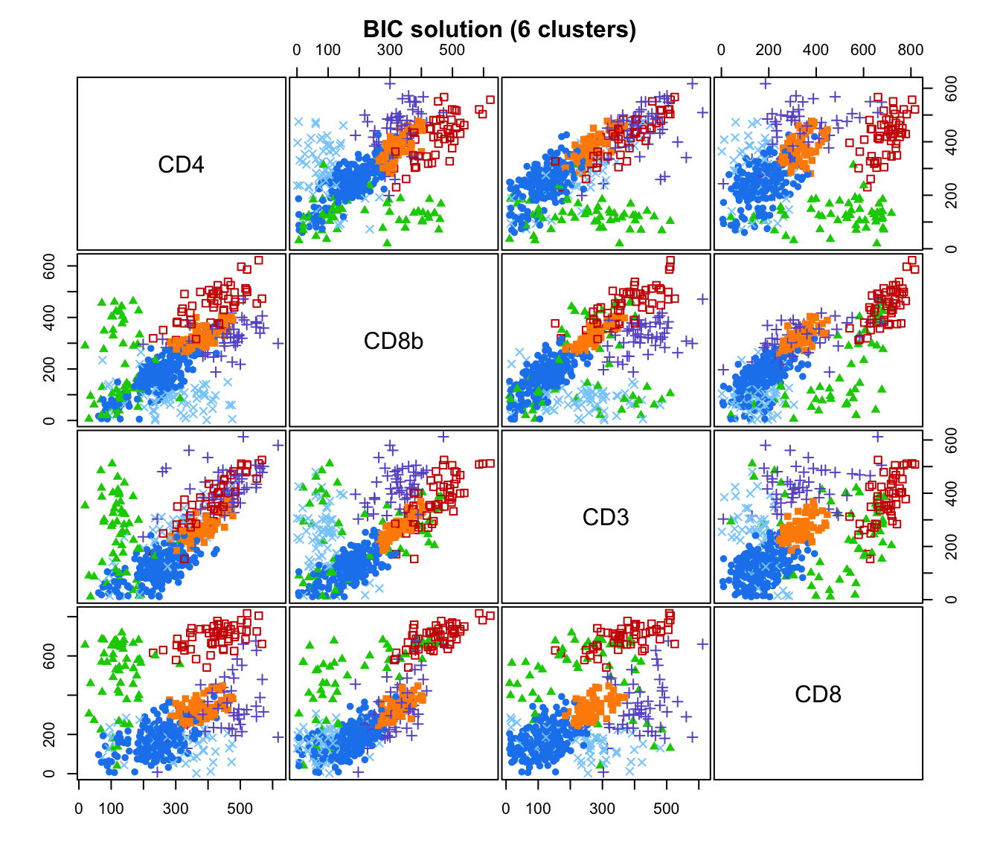
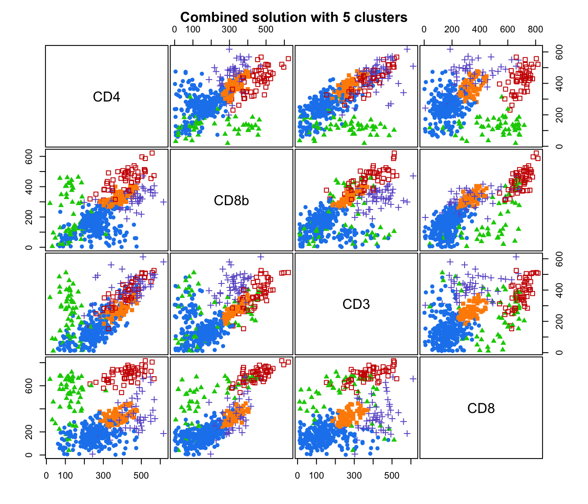
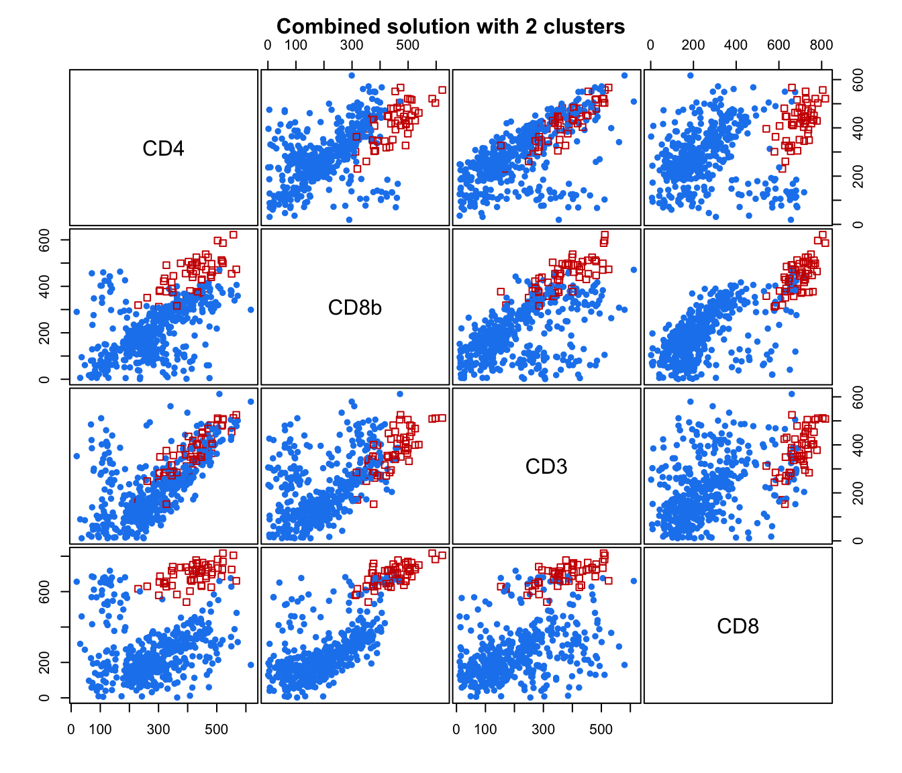
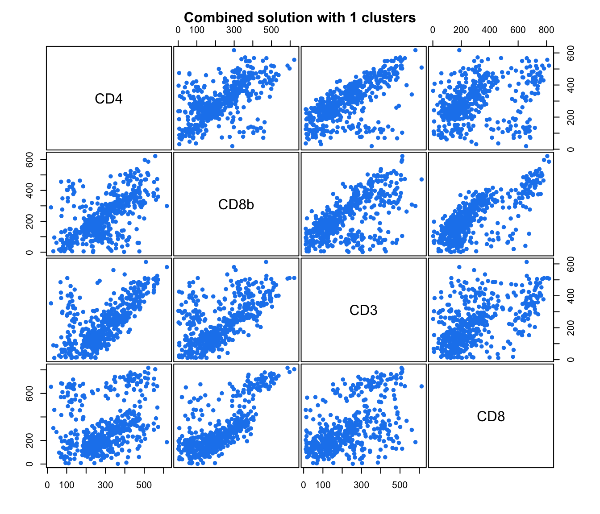
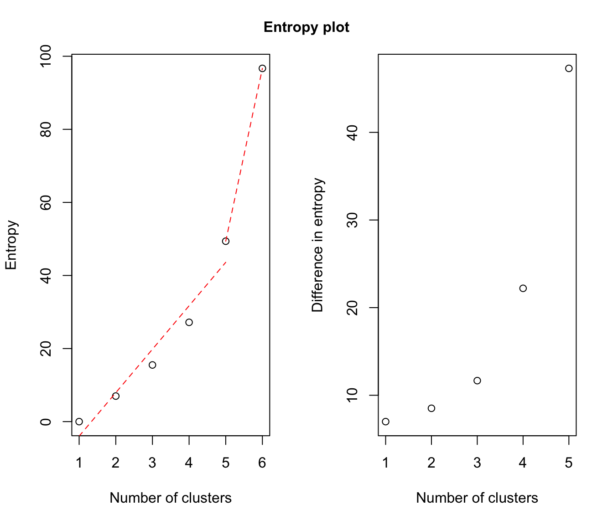
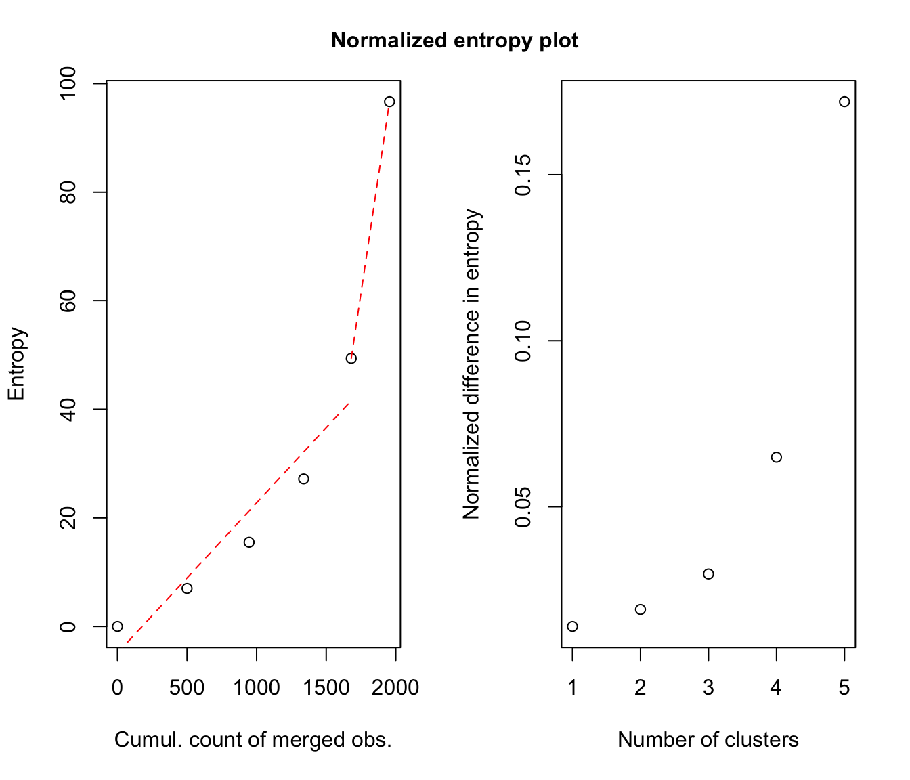
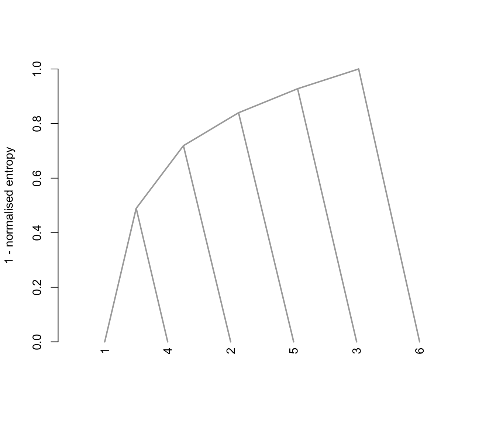

GvHD.RdGvHD (Graft-versus-Host Disease) data of Brinkman et al. (2007). Two samples of this flow cytometry data, one from a patient with the GvHD, and the other from a control patient. The GvHD positive and control samples consist of 9083 and 6809 observations, respectively. Both samples include four biomarker variables, namely, CD4, CD8b, CD3, and CD8. The objective of the analysis is to identify CD3+ CD4+ CD8b+ cell sub-populations present in the GvHD positive sample.
A treatment of this data by combining mixtures is proposed in Baudry et al. (2010).
data(GvHD)GvHD.pos (positive patient) is a data frame with 9083 observations on the following 4 variables, which are biomarker measurements.
GvHD.control (control patient) is a data frame with 6809 observations on the following 4 variables, which are biomarker measurements.
R. R. Brinkman, M. Gasparetto, S.-J. J. Lee, A. J. Ribickas, J. Perkins, W. Janssen, R. Smiley and C. Smith (2007). High-content flow cytometry and temporal data analysis for defining a cellular signature of Graft-versus-Host Disease. Biology of Blood and Marrow Transplantation, 13: 691-700.
K. Lo, R. R. Brinkman, R. Gottardo (2008). Automated gating of flow cytometry data via robust model-based clustering. Cytometry A, 73: 321-332.
J.-P. Baudry, A. E. Raftery, G. Celeux, K. Lo and R. Gottardo (2010). Combining mixture components for clustering. Journal of Computational and Graphical Statistics, 19(2):332-353.
# \donttest{
data(GvHD)
dat <- GvHD.pos[1:500,] # only a few lines for a quick example
output <- clustCombi(data = dat)
output # is of class clustCombi
#> 'clustCombi' object:
#> Mclust model: (VEV,6)
#> Available object components: classification combiM combiz MclustOutput
#> Combining matrix (K+1 classes -> K classes): <object_name>$combiM[[K]]
#> Classification for K classes: <object_name>$classification[[K]]
# plot the hierarchy of combined solutions
plot(output, what = "classification")




# plot some "entropy plots" which may help one to select the number of classes
plot(output, what = "entropy")


# plot the tree structure obtained from combining mixture components
plot(output, what = "tree")

# }